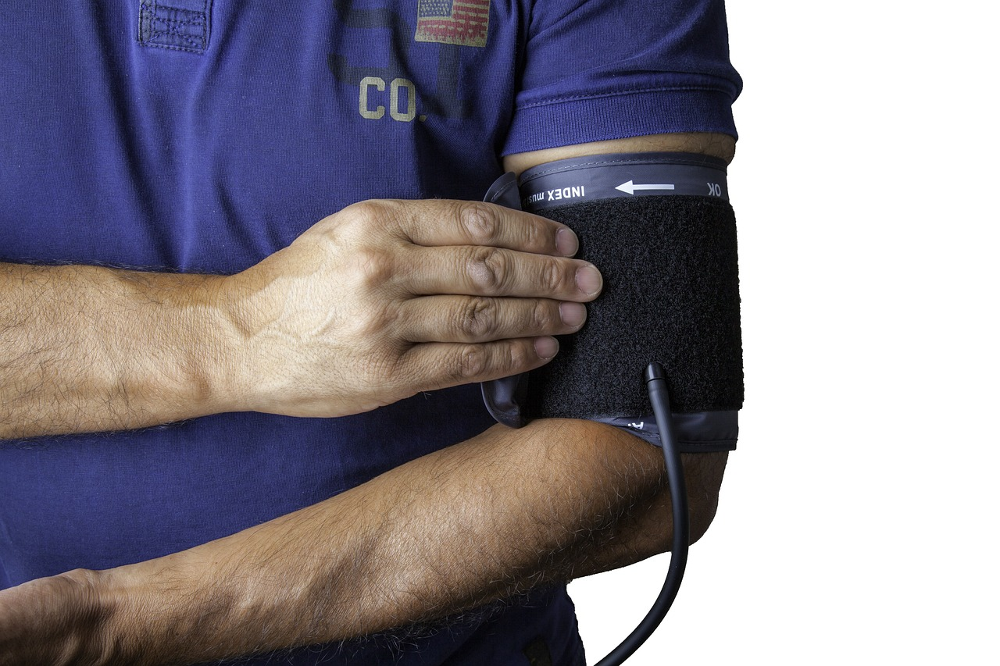

Cuidados Básicos de Saúde
Importância de Tomar Medicamentos na Hora Certa
Tomar medicamentos no horário correto é crucial para garantir que eles funcionem adequadamente. Quando seguimos as orientações médicas, mantemos níveis adequados do medicamento no corpo, o que maximiza seu efeito e minimiza os riscos de complicações. Medicamentos para doenças crônicas, como hipertensão e diabetes, exigem atenção especial aos horários de administração. Perder uma dose ou tomá-la no momento errado pode prejudicar o tratamento. Usar alarmes no celular ou contar com o apoio de familiares pode ajudar a lembrar os horários. Em resumo, a pontualidade na medicação é essencial para uma boa saúde.
Hidratação
Manter-se hidratado é fundamental para o bom funcionamento do corpo. A água desempenha papéis essenciais, como a regulação da temperatura corporal, a eliminação de toxinas e o suporte à digestão. Além disso, a hidratação adequada é importante para a saúde da pele e o desempenho físico. É recomendável beber pelo menos 2 litros de água por dia, ou mais, dependendo da atividade física e do clima. Em dias quentes ou durante exercícios intensos, o corpo perde mais líquidos, tornando a reposição ainda mais necessária.
Alimentação Saudável

Uma dieta balanceada rica em frutas, vegetais, grãos integrais e proteínas magras ajuda a prevenir doenças e promove um bom estado de saúde. Evitar o consumo excessivo de açúcares, gorduras saturadas e alimentos processados pode reduzir o risco de doenças crônicas.
Atividade Física Regular
A prática regular de exercícios físicos é essencial para manter a saúde física e mental. O ideal é realizar pelo menos 150 minutos de atividade moderada, como caminhadas rápidas ou andar de bicicleta, ou 75 minutos de atividade intensa, como corrida ou esportes. A atividade física não só ajuda a controlar o peso, mas também melhora a saúde cardiovascular, aumenta a força muscular e reduz o estresse e a ansiedade. Além disso, movimentar-se regularmente contribui para a melhoria do sono e aumenta a energia ao longo do dia.
Sono Adequado
Dormir bem é crucial para a saúde física e mental. A maioria dos adultos precisa de 7 a 9 horas de sono por noite para se sentir descansada e alerta. A qualidade do sono afeta diretamente o humor, a capacidade de concentração e até o sistema imunológico. A falta de sono pode levar a problemas de concentração, irritabilidade e uma série de condições de saúde, incluindo obesidade e diabetes. Estabelecer uma rotina de sono regular e criar um ambiente propício ao descanso são passos importantes para garantir noites de sono reparadoras.
Higiene Pessoal
Praticar uma boa higiene pessoal é fundamental para a prevenção de doenças e infecções. Isso inclui lavar as mãos regularmente, especialmente antes das refeições e após o uso do banheiro, escovar os dentes duas vezes ao dia e tomar banho regularmente. A higiene adequada não só ajuda a manter o corpo limpo, mas também evita a propagação de germes e bactérias. Instruir crianças sobre a importância da higiene pessoal desde cedo contribui para hábitos saudáveis ao longo da vida.
Vacinação
Manter a vacinação em dia é fundamental para proteger a saúde individual e coletiva. As vacinas ajudam a prevenir doenças graves, como sarampo, rubéola e gripe, e são uma medida eficaz de saúde pública. Além disso, vacinas para doenças como hepatite e HPV podem prevenir complicações sérias. Consultar um profissional de saúde sobre o calendário de vacinação e garantir que todas as vacinas recomendadas sejam tomadas é uma atitude proativa para manter a saúde.
Saúde Mental

Cuidar da saúde mental é tão importante quanto cuidar da saúde física. A saúde mental impacta todos os aspectos da vida, incluindo relacionamentos e desempenho no trabalho. Praticar técnicas de relaxamento, como meditação e ioga, pode ajudar a reduzir o estresse e a ansiedade. Além disso, buscar apoio psicológico quando necessário é fundamental. Conversar sobre sentimentos e emoções com amigos, familiares ou profissionais pode melhorar o bem-estar geral e promover um estado mental saudável.
Check-ups Regulares

Consultas médicas periódicas são essenciais para identificar e tratar problemas de saúde precocemente. Realizar exames de rotina, como medição da pressão arterial, exames de sangue e check-ups dentários, ajuda a detectar qualquer anormalidade antes que se torne uma condição mais séria. Seguir as orientações médicas e manter um diálogo aberto com profissionais de saúde é crucial para garantir que sua saúde esteja sempre em dia e para tomar medidas preventivas quando necessário.